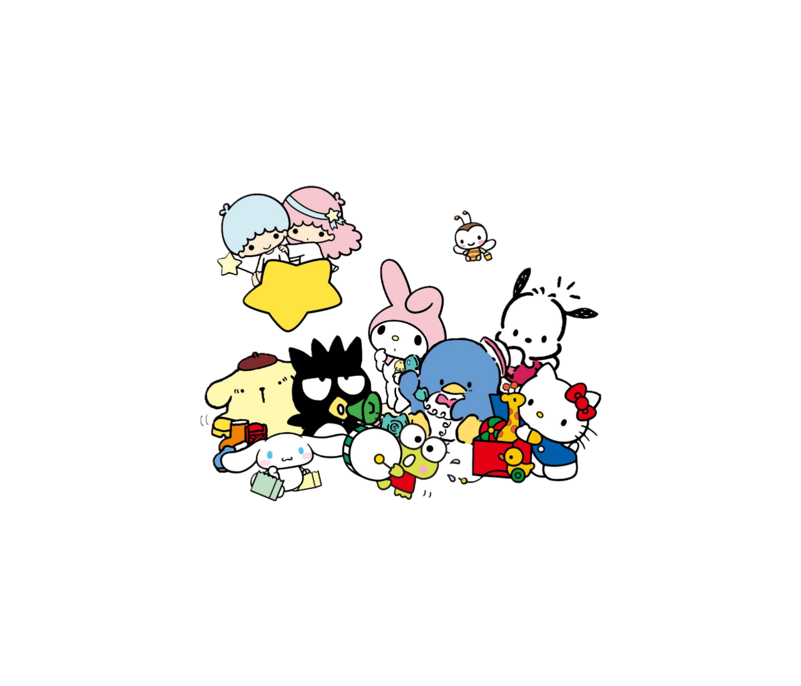

|  |
Hello Kitty vendeu bem imediatamente após o lançamento de 1974, e as vendas da Sanrio aumentaram sete vezes até cair temporariamente em 1978. Novas séries com Hello Kitty em designs temáticos diferentes são lançadas regularmente, seguindo as tendências atuais. Yuko Yamaguchi, a principal designer da maior parte da história da Hello Kitty, disse que moda, filmes e TV a inspiram na criação de novos designs. |